Setting up freeGLUT on Code::Blocks 10.05
Last Updated 8/09/12
1)First thing you need to do is download freeGLUT headers and binaries. You will find them on the freeGLUT website, specifically
on this page.
Scroll down to the Prepackaged Releases section and click on the prepackaged windows binaries page.
Then download the MinGW binaries archive.
Open the zip archive and there should be a folder called "freeglut". Copy that entire folder and put it anywhere you'd like. For these tutorials I'm putting it in a directory I created called C:\mingw_dev_lib
2)Start up Code::Blocks and create a new empty project.
3)Go to project properties.
4)Now we have to tell Code::Blocks to search for header files in the freeglut folder we just extracted. Go to build options.
In the Search Directories, add a new compiler directory.
Select the include directory from the folder you extracted.
And say no when it asks you whether you want it to be a relative path. Now Code::Blocks knows where to find the freeGLUT header files.
5)Next we are going to tell Code::Blocks to search for library files in the freeGLUT folder we just extracted. All you have to is add the lib directory from the freeGLUT folder you extacted to the linker search directories.
6)In order to compile OpenGL and freeGLUT code, we have to tell the Code::Blocks to link against the libraries. Go under Linker Settings and paste
7)Go back to the project properites and under Build Targets select the build type.
8)When our OpenGL/freeGLUT application runs, the operating system needs to be able to find the dll file.
Go find the freeGLUT folder you extracted and from the bin folder inside copy freeglut.dll and put it either where your executable will run, or inside of the system directory. C:\WINDOWS\SYSTEM32 is the 32bit windows system directory and C:\Windows\SysWOW64 is the 64bit system directory of 32bit applications. For these tutorials, I'm assuming we're making 32bit applications.
9)Now go download the source for lesson 01. Add the source files inside to your project.
Now build. If there are any errors, make sure you didn't skip a step.
Now that you have OpenGL and freeGLUT compiling, it time to go onto part 2 of the tutorial.
Scroll down to the Prepackaged Releases section and click on the prepackaged windows binaries page.
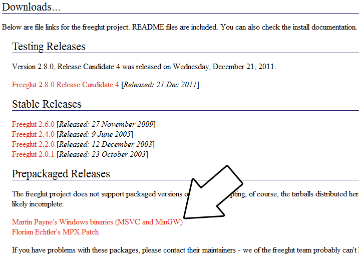
Then download the MinGW binaries archive.
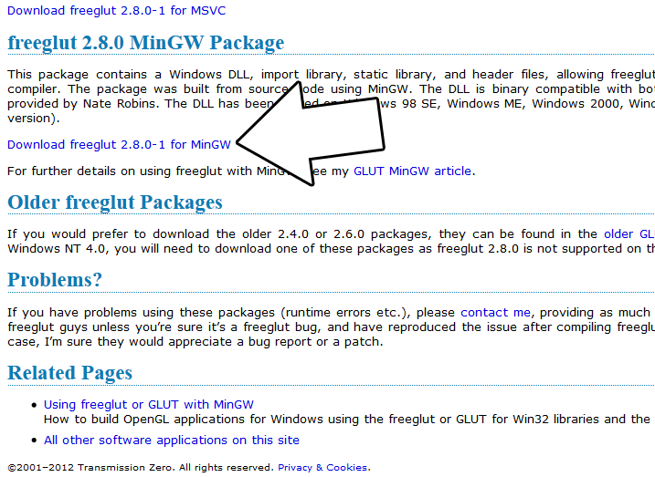
Open the zip archive and there should be a folder called "freeglut". Copy that entire folder and put it anywhere you'd like. For these tutorials I'm putting it in a directory I created called C:\mingw_dev_lib
2)Start up Code::Blocks and create a new empty project.
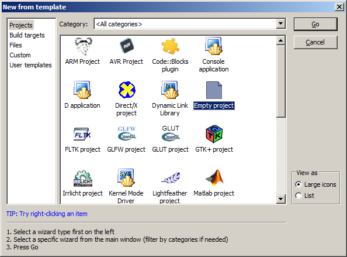
3)Go to project properties.
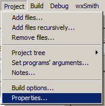
4)Now we have to tell Code::Blocks to search for header files in the freeglut folder we just extracted. Go to build options.
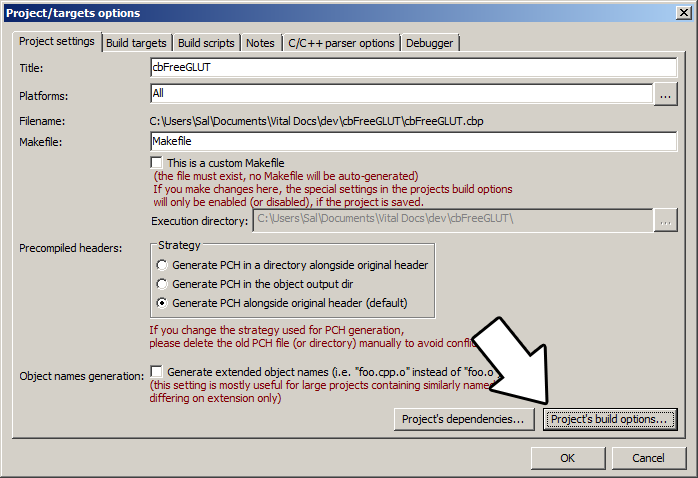
In the Search Directories, add a new compiler directory.
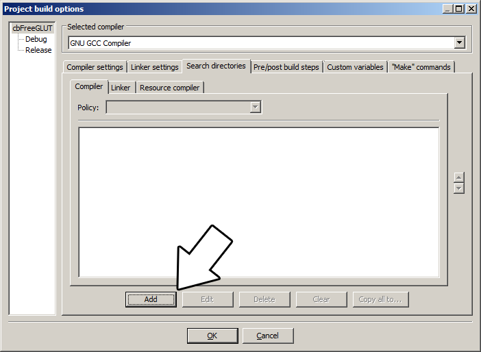
Select the include directory from the folder you extracted.
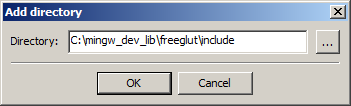
And say no when it asks you whether you want it to be a relative path. Now Code::Blocks knows where to find the freeGLUT header files.
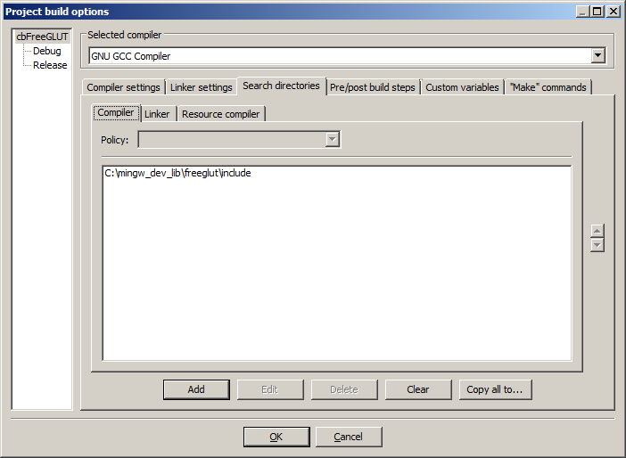
5)Next we are going to tell Code::Blocks to search for library files in the freeGLUT folder we just extracted. All you have to is add the lib directory from the freeGLUT folder you extacted to the linker search directories.
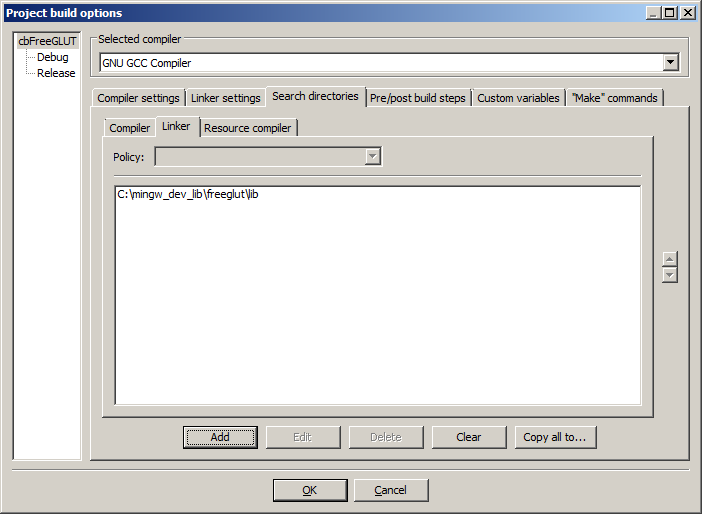
6)In order to compile OpenGL and freeGLUT code, we have to tell the Code::Blocks to link against the libraries. Go under Linker Settings and paste
-lOpenGL32 -lglu32 -lfreeglut
into the other linker options field and click OK.
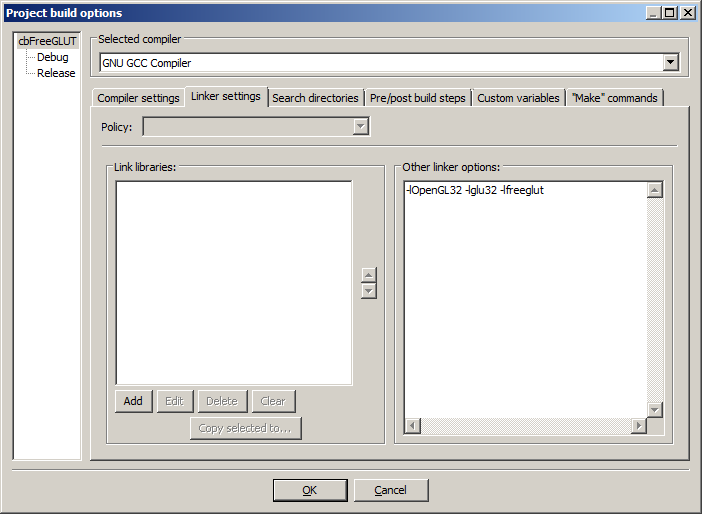
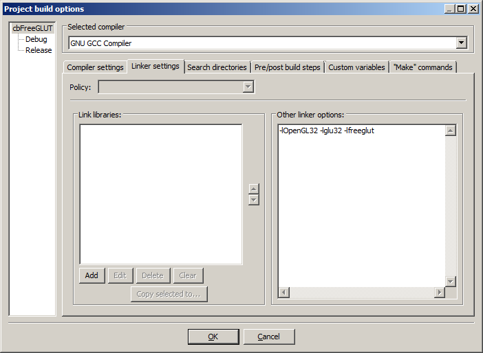
7)Go back to the project properites and under Build Targets select the build type.
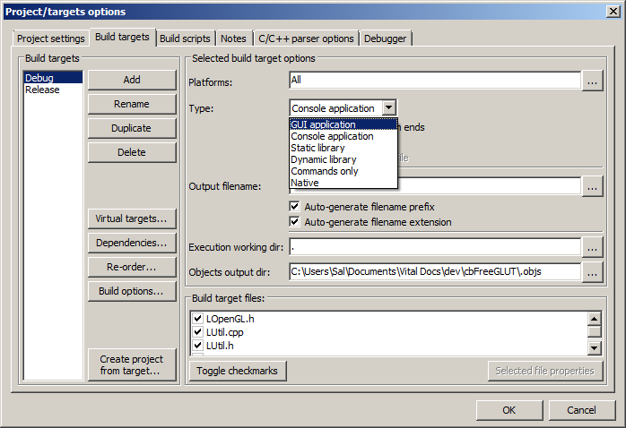
I recommend setting it to GUI Application if you don't want console output, and Console Application if you do want console output.8)When our OpenGL/freeGLUT application runs, the operating system needs to be able to find the dll file.
Go find the freeGLUT folder you extracted and from the bin folder inside copy freeglut.dll and put it either where your executable will run, or inside of the system directory. C:\WINDOWS\SYSTEM32 is the 32bit windows system directory and C:\Windows\SysWOW64 is the 64bit system directory of 32bit applications. For these tutorials, I'm assuming we're making 32bit applications.
9)Now go download the source for lesson 01. Add the source files inside to your project.
Now build. If there are any errors, make sure you didn't skip a step.
Now that you have OpenGL and freeGLUT compiling, it time to go onto part 2 of the tutorial.